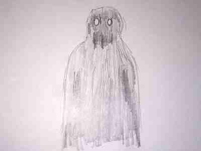
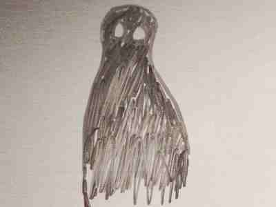

|
Добро пожаловать, Дуглас Корни
Внутренняя новостная сеть Сайдириал Плексус
ВСЯ НАХОДЯЩАЯСЯ ЗДЕСЬ ИНФОРМАЦИЯ ПОЛНОСТЬЮ КОНФИДЕНЦИАЛЬНА.
ЕЁ РАСПРОСТРАНЕНИЕ КАРАЕТСЯ ПРИВЛЕЧЕНИЕМ К ОТВЕТСТВЕННОСТИ. БЛАГОДАРИМ ЗА ПОНИМАНИЕ.
< Вернуться к ленте новостей
СОВЕРШЕННО СЕКРЕТНО
2/14/1996 - Повышенное количество встреч с "Теневыми людьми"
Нам стало известно о 200% увеличении встреч наших Путешественников с так называемыми "Теневыми людьми".
Подобный феномен случался всё чаще и чаще за последний год, особенно во время длительных
Вылазок. В основном о таких встречах сообщали Путешественники, совершающие регулярные Вылазки (более 10 раз в месяц).
В последнее время, даже те, которые путешествовали второй или третий раз, стали сообщать о таких встречах.
Более 75% докладов о "Теневых людях" были предоставлены людьми, у которых до этого не было доступа к
информации о них, поэтому мы исключили возможность ношения этим феноменом антропогенного характера.
Похоже, что эти тёмные фигуры лишь наблюдают и смотрят, а при приближении к ним пропадают.
Свыше 60% Путешественников, встретивших их, заявляют, что казалось, будто они чего-то ждут.
Предлагаю приостановить все последующие Вылазки до прояснения ситуации.
Соня Дарахова
Приложение: примеры рисунков, отображающих "Теневых людей".


|